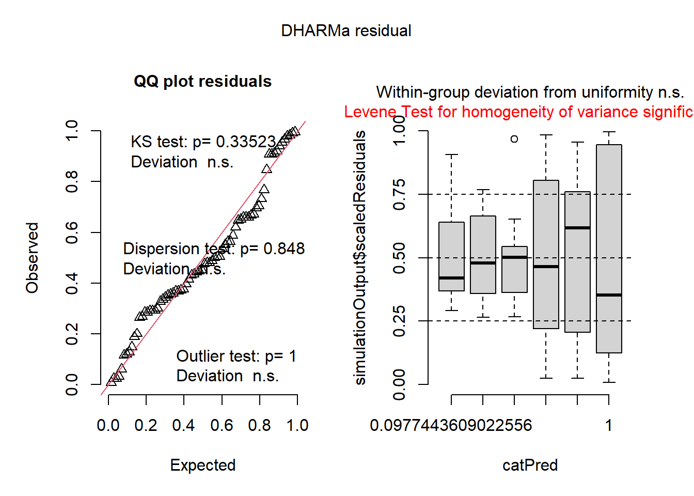

Aula_6_Transformações, Modelos Lineares e Curvas Dose-Resposta
Author
Karine Mesquita
Aula 6
Nesta aula abordamos estratégias para normalizar dados experimentais por meio de transformações (como a raiz quadrada e o método de Box-Cox), quando a Anova não atender aos pressupostos de normalidade e homocedasticidade. Por fim, introduzimos os modelos não lineares para curvas dose-resposta, utilizando o pacote drc.
Transformação de dados
Box cox
#install.packages("MASS")library(MASS)
Warning: pacote 'MASS' foi compilado no R versão 4.4.3
insects <- InsectSpraysm1 <-lm(count ~spray, data = insects)library(DHARMa)
Warning: pacote 'DHARMa' foi compilado no R versão 4.4.3
This is DHARMa 0.4.7. For overview type '?DHARMa'. For recent changes, type news(package = 'DHARMa')
plot(simulateResiduals(m1))

#como não atendeu ao pressuposto de homogeneidade, testamos a transformação dos dados. #Inicialmente testa a transformação por raiz quadrada. m1 <-lm(sqrt(count) ~ spray, data = insects)m1
#Transformação por log (com +1 para evitar log(0))m1_log <-lm(log(count +1) ~ spray, data = insects) # +1 para evitar log(0), caso tenha valores zerom1_log
#raiz quadrada é 0.5 e log é 0.Quando lambda é 1 o valor é igual o original. #box cox é usado quando o log ou raiz não dá certo. #as médias tem que ser com os valores destransformados boxcox(lm(insects$count+0.1~1))b <-boxcox(lm(insects$count+0.1~1))
lambda <- b$x[which.max(b$y)] # Extrair o lambda ótimolambda
[1] 0.4242424
# Quando for apresentar as médias, deve-se usar os valores originais (sem transformação).# A transformação é aplicada apenas para satisfazer os pressupostos da ANOVA ou regressão.library(tidyverse)
Warning: pacote 'tidyverse' foi compilado no R versão 4.4.3
Warning: pacote 'readr' foi compilado no R versão 4.4.3
Warning: pacote 'stringr' foi compilado no R versão 4.4.3
── Conflicts ────────────────────────────────────────── tidyverse_conflicts() ──
✖ dplyr::filter() masks stats::filter()
✖ dplyr::lag() masks stats::lag()
✖ dplyr::select() masks MASS::select()
ℹ Use the conflicted package (<http://conflicted.r-lib.org/>) to force all conflicts to become errors
#análise visual dos dados em da emergencia de plantas em função dos inóculos library(ggplot2)estande |>ggplot(aes(trat,nplants))+geom_point(color ="gray")+geom_smooth(method ="lm", se =FALSE, color ="black")+facet_wrap(~ exp)+theme_minimal()+labs(x="% de inóculo da semente",y="número de plantas")
m_exp1 <-lm(nplants2 ~ trat, data = exp1)summary(m_exp1)
Call:
lm(formula = nplants2 ~ trat, data = exp1)
Residuals:
1 2 3 4 5 6
1.2500 0.7258 1.7016 -2.5968 -2.9435 1.8629
Coefficients:
Estimate Std. Error t value Pr(>|t|)
(Intercept) 52.50000 1.36929 38.341 2.76e-06 ***
trat -0.24194 0.06054 -3.996 0.0162 *
---
Signif. codes: 0 '***' 0.001 '**' 0.01 '*' 0.05 '.' 0.1 ' ' 1
Residual standard error: 2.442 on 4 degrees of freedom
Multiple R-squared: 0.7997, Adjusted R-squared: 0.7496
F-statistic: 15.97 on 1 and 4 DF, p-value: 0.01618
# Sem summarise, mantendo 'nplants', 'trat' e 'bloco'exp1 <- estande |>filter(exp ==1)# Modelo com trat e blocom_exp1 <-lm(nplants ~ trat + bloco, data = exp1)summary(m_exp1)
Call:
lm(formula = nplants ~ trat + bloco, data = exp1)
Residuals:
Min 1Q Median 3Q Max
-18.0769 -6.7847 -0.7817 4.0522 22.6091
Coefficients:
Estimate Std. Error t value Pr(>|t|)
(Intercept) 75.5833 5.7164 13.222 1.19e-11 ***
trat -0.2419 0.1323 -1.829 0.081623 .
bloco -9.2333 1.9485 -4.739 0.000111 ***
---
Signif. codes: 0 '***' 0.001 '**' 0.01 '*' 0.05 '.' 0.1 ' ' 1
Residual standard error: 10.67 on 21 degrees of freedom
Multiple R-squared: 0.5513, Adjusted R-squared: 0.5086
F-statistic: 12.9 on 2 and 21 DF, p-value: 0.0002216
m_exp1 <-lm(nplants ~ trat + bloco, data = exp1)summary(m_exp1)
Call:
lm(formula = nplants ~ trat + bloco, data = exp1)
Residuals:
Min 1Q Median 3Q Max
-18.0769 -6.7847 -0.7817 4.0522 22.6091
Coefficients:
Estimate Std. Error t value Pr(>|t|)
(Intercept) 75.5833 5.7164 13.222 1.19e-11 ***
trat -0.2419 0.1323 -1.829 0.081623 .
bloco -9.2333 1.9485 -4.739 0.000111 ***
---
Signif. codes: 0 '***' 0.001 '**' 0.01 '*' 0.05 '.' 0.1 ' ' 1
Residual standard error: 10.67 on 21 degrees of freedom
Multiple R-squared: 0.5513, Adjusted R-squared: 0.5086
F-statistic: 12.9 on 2 and 21 DF, p-value: 0.0002216
#Na ausência de inóculo (intercepto), a média de plantas no estande é de 52. A cada aumento de 1% no inóculo, observa-se uma redução de 0,24 no número de plantas.
Experimento 2
exp2 <- estande |>filter(exp ==2)m_exp2 <-lm(nplants ~ trat , data = exp2)summary(m_exp2)
Call:
lm(formula = nplants ~ trat, data = exp2)
Residuals:
Min 1Q Median 3Q Max
-25.7816 -7.7150 0.5653 8.1929 19.2184
Coefficients:
Estimate Std. Error t value Pr(>|t|)
(Intercept) 60.9857 3.6304 16.798 4.93e-14 ***
trat -0.7007 0.1605 -4.365 0.000247 ***
---
Signif. codes: 0 '***' 0.001 '**' 0.01 '*' 0.05 '.' 0.1 ' ' 1
Residual standard error: 12.95 on 22 degrees of freedom
Multiple R-squared: 0.4641, Adjusted R-squared: 0.4398
F-statistic: 19.05 on 1 and 22 DF, p-value: 0.0002473
Experimento 3
exp3 <- estande |>filter(exp ==3)m_exp3 <-lm(nplants ~ trat , data = exp3)summary(m_exp3)
Call:
lm(formula = nplants ~ trat, data = exp3)
Residuals:
Min 1Q Median 3Q Max
-26.5887 -3.9597 0.7177 5.5806 19.8952
Coefficients:
Estimate Std. Error t value Pr(>|t|)
(Intercept) 95.7500 2.9529 32.425 < 2e-16 ***
trat -0.7634 0.1306 -5.847 6.97e-06 ***
---
Signif. codes: 0 '***' 0.001 '**' 0.01 '*' 0.05 '.' 0.1 ' ' 1
Residual standard error: 10.53 on 22 degrees of freedom
Multiple R-squared: 0.6085, Adjusted R-squared: 0.5907
F-statistic: 34.19 on 1 and 22 DF, p-value: 6.968e-06
#calcular o slop para o experimentom_exp1$coefficients
(Intercept) trat bloco
75.5833333 -0.2419355 -9.2333333
m_exp2$coefficients
(Intercept) trat
60.9857143 -0.7006912
m_exp3$coefficients
(Intercept) trat
95.7500000 -0.7634409
m_exp1$coefficients
(Intercept) trat bloco
75.5833333 -0.2419355 -9.2333333
(0.24+0.7+0.76)/3
[1] 0.5666667
Considerando o bloco como efeito aleatório
*efeito fixo é o tratamento e blocos os efeitos aleatórios.
Modelo misto
library(lme4)
Carregando pacotes exigidos: Matrix
Anexando pacote: 'Matrix'
Os seguintes objetos são mascarados por 'package:tidyr':
expand, pack, unpack
m_misto <-lmer(nplants ~ trat + (1| exp/bloco),data = estande)#acima, o tratamento é efeito fixo, os experimentos e blocos efeitos aleatórios, e os blocos estão dentro dos experimentos.confint(m_misto)
Linear mixed model fit by REML ['lmerMod']
Formula: nplants ~ trat + (1 | exp/bloco)
Data: estande
REML criterion at convergence: 575.8
Scaled residuals:
Min 1Q Median 3Q Max
-2.21697 -0.63351 0.04292 0.67094 1.92907
Random effects:
Groups Name Variance Std.Dev.
bloco:exp (Intercept) 54.76 7.40
exp (Intercept) 377.43 19.43
Residual 134.99 11.62
Number of obs: 72, groups: bloco:exp, 12; exp, 3
Fixed effects:
Estimate Std. Error t value
(Intercept) 69.74524 11.57191 6.027
trat -0.56869 0.08314 -6.840
Correlation of Fixed Effects:
(Intr)
trat -0.111
library(car)
Carregando pacotes exigidos: carData
Anexando pacote: 'car'
O seguinte objeto é mascarado por 'package:dplyr':
recode
O seguinte objeto é mascarado por 'package:purrr':
some
`summarise()` has grouped output by 'code'. You can override using the
`.groups` argument.
#filtrar para o conjunto de médias de FGT43#install.packages("drc"), ajustar o modelo não linear aos dados library(drc)
Warning: pacote 'drc' foi compilado no R versão 4.4.3
'drc' has been loaded.
Please cite R and 'drc' if used for a publication,
for references type 'citation()' and 'citation('drc')'.
Anexando pacote: 'drc'
Os seguintes objetos são mascarados por 'package:stats':
gaussian, getInitial
m43 <-drm(germination ~ dose,data = FGT43,fct =W2.3())m43 <-drm(germination ~dose,data = FGT43, fct =LL.3()) #começar a testar com o modelo LL.3 summary(m43)